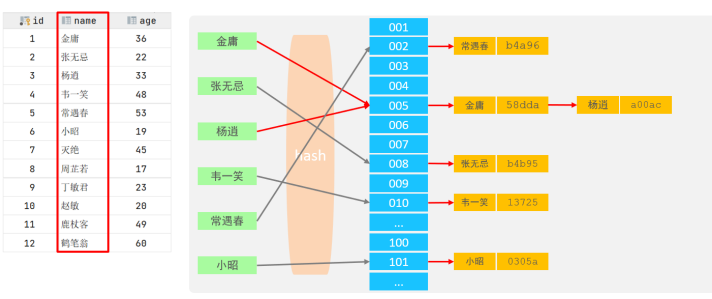

- 索引概述
- 索引结构
- 索引分类
- 索引语法
- SQL性能分析
- 索引使用
- 索引设计原则
索引概述
介绍
类似查字典，索引（index）是帮助MySQL高效获取数据的数据结构(有序)。
在数据之外，数据库系统还维护着满足 特定查找算法的数据结构，这些数据结构以某种方式引用（指向）数据， 这样就可以在这些数据结构 上实现高级查找算法，这种数据结构就是索引。
如下图

下列语句：
1 | select * from user where age=45; |
如果不使用索引，将会进行全表扫描
若使用索引
45>36走右子树，45小于48走左子树，只需要查询三次，效率提升
特点
优势
- 提高数据检索的效率，降低数据库的IO成本
- 通过索引列对数据进行排序，降低 数据排序的成本，降低CPU的消耗。
缺点
- 索引列也是要占用空间的。
- 索引大大提高了查询效率，同时却也降低更新表的速度， 如对表进行INSERT(增)、DELETE(删)、UPDATE(改)时，效率降低。
索引结构
概述
MySQL的索引是在存储引擎层实现的，不同的存储引擎有不同的索引结构，主要包含以下几种：
索引结构 描述 B+Tree 最常见的索引类型，大部分引擎都支持 B+ 树索引 Hash 底层数据结构是用哈希表实现的, 只有精确匹配索引列的查询才有效, 不 支持范围查询 R-tree (空间索引） 空间索引是MyISAM引擎的一个特殊索引类型，主要用于地理空间数据类 型，通常使用较少 Full-text (全文索引) 是一种通过建立倒排索引,快速匹配文档的方式 不同引擎对索引的支持情况
索引 InnoDB MyISAM Memory B+tree 支持 支持 支持 Hash 不支持 不支持 支持 R-tree 不支持 支出 不支持 Full-text 5.6版本之后支持 支持 不支持 B-Tree(多路平衡查找树)
B-Tree: B树是一种多叉路衡查找树，相对于二叉树，B树每个节点可以有多个分支，即多叉。
特点：
- 5阶的B树，每一个节点最多存储4个key，对应5个指针。
- 一旦节点存储的key数量到达5，就会裂变，中间元素向上分裂。
- 在B树中，非叶子节点和叶子节点都会存放数据。
B+Tree
B+Tree是B-Tree的变种，我们以一颗最大度数（max-degree）为4（4阶）的b+tree为例，来看一 下其结构示意图：
- 绿色框框起来的部分，是索引部分，仅仅起到索引数据的作用，不存储数据。
- 红色框框起来的部分，是数据存储部分，在其叶子节点中要存储具体的数据。
B+Tree 与 B-Tree相比，主要有以下三点区别：
- 所有的数据都会出现在叶子节点。 如作为索引部分的 38、67、16、29，都在叶子结点重新出现
- 叶子节点形成一个单向链表
- 非叶子节点仅仅起到索引数据作用，具体的数据都是在叶子节点存放的。
Hash
哈希索引就是采用一定的hash算法，将键值换算成新的hash值，映射到对应的槽位上，然后存储在 hash表中。

其中 name 经过hash算法映射到槽位，b4a96就是常遇春的hash值
如果两个键值映射到了同一个槽位，也就是hash冲突（hash碰撞），可以通过链表解决【如 金庸与杨逍】
特点
- Hash索引只能用于对等比较(=，in)，不支持范围查询（between，>，< ，…）
- 无法利用索引完成排序操作
- 查询效率高，通常(不存在hash冲突的情况)只需要一次检索就可以了，效率通常要高于B+tree索 引
为什么InnoDB存储引擎选择使用B+tree索引结构?
- 相对于二叉树，层级更少，搜索效率高
- 对于B-tree，无论是叶子节点还是非叶子节点，都会保存数据，这样导致一页中存储 的键值减少，指针跟着减少，要同样保存大量数据，只能增加树的高度，导致性能降低
- 相对Hash索引，B+tree支持范围匹配及排序操作
索引分类
在MySQL数据库，将索引的具体类型主要分为以下几类：主键索引、唯一索引、常规索引、全文索引。
| 分类 | 含义 | 特点 | 关键字 |
|---|---|---|---|
| 主键索引 | 针对于表中主键创建的索引 | 默认自动创建, 只能 有一个 | primary |
| 唯一索引 | 避免同一个表中某数据列中的值重复 | 可以有多个 | unique |
| 常规索引 | 快速定位特定数据 | 可以有多个 | |
| 全文索引 | 全文索引查找的是文本中的关键词，而不是比 较索引中的值 | 可以有多个 | fullText |
聚集索引 和 二级索引
在InnoDB存储引擎中，根据索引的存储形式，又可以分为以下两种：
分类 含义 特点 聚集索引(Clustered Index) 将数据存储与索引放到了一块，索引结构的叶子 节点保存了行数据 必须有,而且只 有一个 二级索引(Secondary Index) 将数据与索引分开存储，索引结构的叶子节点关 联的是对应的主键 可以存在多个 如果存在主键，主键索引就是聚集索引
如果不存在主键，将使用第一个 唯一索引 作为聚集索引
如果表没有主键，或没有合适的唯一索引，则InnoDB会自动生成一个rowid作为隐藏的聚集索 引
聚集索引和二级索引如下
注：
- 聚集索引的叶子节点下挂的是这一行的数据
- 二级索引的叶子节点下挂的是该字段值对应的主键值
查找过程：
使用语句：
1
select * from user where name='Arm';
- 寻找 因为根据 name字段寻找Arm，所以到二级索引，因为 A 在 L 前，所以到左子树，A 在 G 之前定位到 Arm 查到主键值 10。
- 因为返回数据是 *，回到 聚集索引 找到 10，最终找到 10 对应的行。
以上过程称为回表查询
由上可知，使用 id 比 使用 name 查询速度更快
回表查询：
这种先到二级索引中查找数据，找到主键值，然后再到聚集索引中根据主键值，获取数据的方式，就称之为回表查询。
索引语法
创建索引
1
create [unique | fulltext] index index_name on table_name (index_col_name,...);
[unique | fulltext]:为可选项，若不选，则创建的常规索引(index_col_name,...)：中表示可以一个索引可以关联多个字段，若 一个索引关联一个字段：单列索引；若一个索引关联了多个字段 则称之为：联合索引（组合索引）注：如果使用联合索引：使用最频繁的字段放在左侧，根据频繁成都从重到轻，要遵循 最左前缀原则
查看索引
1
show index from table_name;
删除索引
1
drop index index_name on table_name;
SQL性能分析
SQL执行频率
MySQL 客户端连接成功后，通过
show [session|global] status命令可以提供服务器状态信 息。通过如下指令，可以查看当前数据库的INSERT、UPDATE、DELETE、SELECT的访问频次：1
2
3-- session 是查看当前会话 ;
-- global 是查询全局数据 ;
SHOW GLOBAL STATUS LIKE 'Com_______';慢查询日志
慢查询日志记录了所有执行时间超过指定参数（long_query_time，单位：秒，默认10秒）的所有 SQL语句的日志。
使用
1
show variables like 'slow_query_log';
查看系统变量 slow_query_log
使用以下指令打开
1
set global slow_query_log='ON';
profile详情
show profiles 能够在做SQL优化时帮助我们了解时间都耗费到哪里去了。通过have_profiling 参数，能够看到当前MySQL是否支持profile操作：
1
select @@have_profiling ;
默认profiling是关闭的，可以通过set语句在session/global级别开启profiling：
1
set profiling=1;
profiling已经被打开，我们所执行的SQL语句，都会被MySQL记录，并记录执行时间消耗到哪儿去 了。 我们直接执行如下的SQL语句：
1
2
3
4select * from tb_user;
select * from tb_user where id = 1;
select * from tb_user where name = '白起';
select count(*) from tb_sku;执行一系列的业务SQL的操作，然后通过如下指令查看指令的执行耗时：
1
2
3
4
5
6-- 查看每一条SQL的耗时基本情况
show profiles;
-- 查看指定query_id的SQL语句各个阶段的耗时情况
show profile for query query_id;
-- 查看指定query_id的SQL语句CPU的使用情况
show profile cpu for query query_id;explain执行计划
explain 或者 desc命令获取 MySQL 如何执行 select 语句的信息，包括在 select 语句执行 过程中表如何连接和连接的顺序。
语法：
1
2
3
4-- 直接在select语句之前加上关键字 explain / desc
explain select 字段列表 from 表名 where 条件;
-- 或
desc select 字段列表 from 表名 where 条件;在命令行中的效果：
一下表格为对每列的解释
字段 含义 id select查询的序列号，表示查询中执行select子句或者是操作表的顺序 (id相同，执行顺序从上到下；id不同，值越大，越先执行)。 select_type 表示 SELECT 的类型，常见的取值有 SIMPLE（简单表，即不使用表连接 或者子查询）、PRIMARY（主查询，即外层的查询）、 UNION（UNION 中的第二个或者后面的查询语句）、 SUBQUERY（SELECT/WHERE之后包含了子查询）等 type 表示连接类型，性能由好到差的连接类型为NULL、system、const、 eq_ref、ref、range、 index、all 。 possible_key 显示可能应用在这张表上的索引，一个或多个。 key_len 表示索引中使用的字节数， 该值为索引字段最大可能长度，并非实际使用长度，在不损失精确性的前提下， 长度越短越好 。 rows MySQL认为必须要执行查询的行数，在innodb引擎的表中，是一个估计值， 可能并不总是准确的 filtered 表示返回结果的行数占需读取行数的百分比， filtered 的值越大越好。（比如根据主键去查，我们只读取了一行数据，返回也只返回了一行，那么 filtered=100% ，性能最好） key 实际使用的索引，如果为NULL，则没有使用索引。 Extra 额外的信息 id示例（后面省略）：
1
2
3
4
5
6
7
8
9
10
11+----+
| id |
+----+
| 1 | 表1
+----+
| 1 | 表2
+----+
| 2 | 表3
+----+
| 3 | 表4
+----+如上图：表的执行顺序为 表4 ->表3->表1->表2
type：
当我们根据主键或唯一索引进行访问时是 const，当使用非唯一索引时是 ref ，优化时尽量不要出现 all ，all是全表扫描，性能比较低
索引使用
最左前缀法则
如果索引了多列（联合索引），要遵守最左前缀法则。最左前缀法则指的是查询从索引的最左列开始， 并且不跳过索引中的列。如果跳跃某一列，索引将会部分失效(后面的字段索引失效)
例：
查看tb_user表
1
show index from tb_user;
porfession、age、status为联合索引，所以就必须要保证最左边的列存在，所以profession必须存在；且不能跳过中间的某一列，如果中间跳过某一列，那么后面的索引将会失效，也就是说age不能跳过查看执行计划：
1
explain select * from tb_user where profession='软件工程' and age='31';
1
2
3
4
5
6explain select * from tb_user where profession='软件工程' and age='31'and status='0' ;
-- 或改变一下顺序，执行效果一样
explain select * from tb_user where age='31' and status='0' and profession='软件工程';
-- 最左前缀法则，只关注存不存在，不关注顺序在key_len中看到一个为49，一个为54，就可以知道
status='0'的索引长度为 5去掉
profession='软件工程'字段1
explain select * from tb_user where age='31' and status='0';
此时就是走的全盘扫描，因为不满足最左前缀法则
注：最左前缀法则，只关注存不存在，不关注顺序
范围查询
联合索引中，出现范围查询 ( > , < )，范围查询右侧的列索引失效。
注：在业务允许的情况下，尽可能的使用类似于 >= 或 <= 这类的范围查询，而避免使用 > 或 <
索引失效情况
索引列运算
不要在索引列上进行运算操作， 否则索引将失效。
1
explain select * from tb_user where phone = '17799990015';
查询到结果，使用了索引
使用subString（）
1
explain select * from tb_user where substring(phone,10,2) = '15';
查询到结果，没有使用索引
字符串不加引号
字符串类型字段使用时，不加引号，，可以查询出来，但索引将失效。
模糊查询
如果仅仅是尾部模糊匹配，索引不会失效。如果是头部模糊匹配，索引失效（只要在前面加入了 %，索引就会失效）
or连接条件
用or分割开的条件， 如果or前的条件中的列有索引，而后面的列中没有索引，那么涉及的索引都不会 被用到。 （也就是 or 两边都必须有索引）
数据分布影响
如果MySQL评估使用索引比全表更慢，则不使用索引
SQL提示
示例：
假设
profession有 联合索引 和 单列索引1
2
3
4
5-- 为 profession创建单列索引
create index idx_user_pro on tb_user(profession);
-- 展示执行计划
explain select * from tb_user where profession='软件工程';可以看到 查询走的 联合索引 ，这是MySQL自动选择的结果。
如果我们要指定使用哪个索引可以吗？ 此时就可以借助于 MySQL的SQL提示来完成。
SQL提示：是优化数据库的一个重要手段，简单来说，就是在SQL语句中加入一些人为的提示来达到优 化操作的目的。
use index： 建议MySQL使用哪一个索引完成此次查询（仅仅是建议，mysql内部还会再次进 行评估）。1
explain select * from tb_user use index(idx_user_pro) where profession = '软件工程';
ignore index： 忽略指定的索引1
explain select * from tb_user ignore index(idx_user_pro) where profession = '软件工程';
force index： 强制使用索引。1
explain select * from tb_user force index(idx_user_pro) where profession = '软件工程';
覆盖索引
覆盖索引是指 查询使用了索引，并 且需要返回的列，在该索引中已经全部能够找到
**注：尽量使用覆盖索引，减少select ***
1
2
3
4
5
6
7
8
9
10
11-- 1
explain select id, profession from tb_user where profession = '软件工程' and age =31 and status = '0' ;
-- 2
explain select id,profession,age, status from tb_user where profession = '软件工程' and age = 31 and status = '0' ;
-- 3
explain select id,profession,age, status, name from tb_user where profession = '软件工程' and age = 31 and status = '0' ;
-- 4
explain select * from tb_user where profession = '软件工程' and age = 31 and status= '0';运行结果：
Extra 含义 Using where; Using Index 查找使用了索引，但是需要的数据都在索引列中能找到，所以不需 要回表查询数据 Using index condition 查找使用了索引，但是需要回表查询数据 解释：
语句1 和语句2 直接可以走 联合索引 找到， 查询一次
但是语句3 ，多了一个
name字段，联合索引走完后找到 id，再回表查询通过 id 找到 name， 查询两次语句4 直接通过 id 寻找，走聚集索引，查询一次
如下图
由此可见，语句1 和 语句2 效率高于 语句3 和 语句4，因为后两句要回表查询。
结论：要避免使用
select *，因为很容易出现回表查询前缀索引
当字段类型为字符串（varchar，text等）时，有时候需要索引很长的字符串，这会让 索引变得很大，查询时，浪费大量的磁盘IO， 影响查询效率。此时可以只将字符串的一部分前缀，建 立索引，这样可以大大节约索引空间，从而提高索引效率。
语法 （ n 为前缀索引长度）
1
2-- 创建前缀索引
create index idx_xxxx on table_name(column(n)) ;示例
为tb_user表的email字段，建立长度为5的前缀索引。
1
create index idx_email_5 on tb_user(email(5));
前缀长度
可以根据索引的选择性来决定，而选择性是指不重复的索引值（基数）和数据表的记录总数的比值， 索引选择性越高则查询效率越高， 唯一索引的选择性是1，这是最好的索引选择性，性能也是最好的。
1
2
3select count(distinct email) / count(*) from tb_user ;
select count(distinct substring(email,1,5)) / count(*) from tb_user ;前缀索引查询流程
1
select * from tb_user where email='lvbu666@163.com';
- 首先经过 id 建立 聚集索引，再根据 email 的前5位建立 辅助索引（为什么根据前 5位？ 因为前 5位就有很好的区分度）
- 取
'lvbu666@163.com'前五位到 辅助索引 去查询 - 拿到 id=1，再到 聚集索引 查找
- 匹配聚集索引 中的 id=1， 再拿出 id=1 中的
row的email与 语句传入email进行匹配 ，如果是，则返回 row ； 如果不是，则继续沿链表继续向下寻找
单列索引与联合索引
单列索引：即一个索引只包含单个列。
联合索引：即一个索引包含了多个列。
示例：
如上图，
phone和name都为单列索引使用以下语句
1
explain select id,name,phone from tb_user where name='韩信' and phone='17799990010';
由图可见，可以看到这样查询需要回表查询，（MySQL 会在两个索引中自动选择更高效索引进行匹配）
当我们建立联合索引
1
create unique index idx_user_phone_name on tb_user(phone,name);
此时，查询时，就走了联合索引，而在联合索引中包含 phone、name的信息，在叶子节点下挂的是对 应的主键id，所以查询是无需回表查询的
对应以上，情况如下
注1：
create unique index idx_user_phone_name on tb_user(phone,name);此语句中tb_user(phone,name)的phone和name，颠倒这两个字段的顺序是不一样的（最左前缀法），所以在选择顺序时，需要斟酌。注2：如果存在多个查询条件，考虑针对于查询字段建立索引时，建议建立联合索引， 而非单列索引。
索引设计原则
- 针对于数据量较大（100W+），且查询比较频繁的表建立索引
- 针对于常作为查询条件（where）、排序（order by）、分组（group by）操作的字段建立索引
- 尽量选择区分度高的列作为索引，尽量建立唯一索引，区分度越高，使用索引的效率越高
- 如果是字符串类型的字段，字段的长度较长，可以针对于字段的特点，建立前缀索引
- 尽量使用联合索引，减少单列索引，查询时，联合索引很多时候可以覆盖索引，节省存储空间， 避免回表，提高查询效率
- 要控制索引的数量，索引并不是多多益善，索引越多，维护索引结构的代价也就越大，会影响增、删、改的效率
- 如果索引列不能存储NULL值，请在创建表时使用NOT NULL约束它。当优化器知道每列是否包含 NULL 值时，它可以更好地确定哪个索引最有效地用于查询